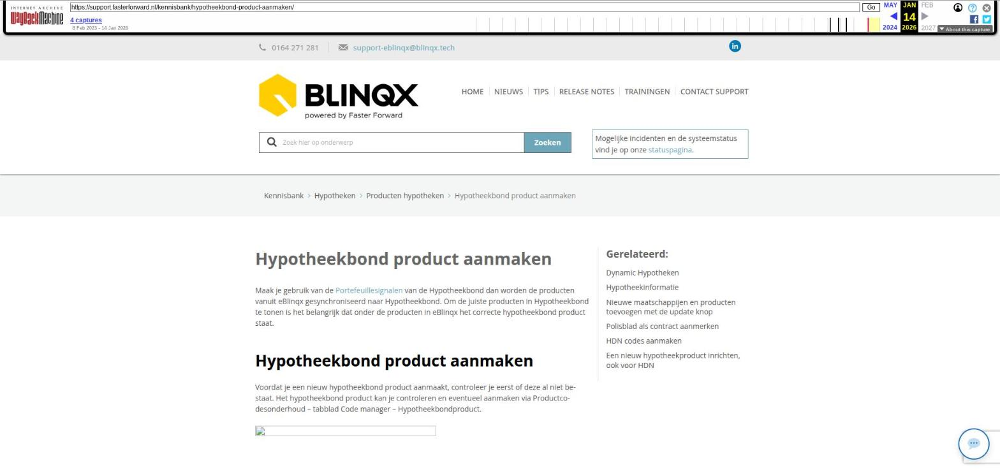

Hypotheekbond product aanmaken

Tekstinhoud
Hypotheekbond product aanmaken
Maak je gebruik van de Portefeuillesignalen van de Hypotheekbond dan worden de producten vanuit eBlinqx gesynchroniseerd naar Hypotheekbond. Om de juiste producten in Hypotheekbond te tonen is het belangrijk dat onder de producten in eBlinqx het correcte hypotheekbond product staat.
Hypotheekbond product aanmaken
Voordat je een nieuw hypotheekbond product aanmaakt, controleer je eerst of deze al niet bestaat. Het hypotheekbond product kan je controleren en eventueel aanmaken via Productcodesonderhoud – tabblad Code manager – Hypotheekbondproduct.
Indien het hypotheekbond product nog niet bestaat, klik je op de het plusicoon om een nieuwe code aan te maken.
De gegevens om de velden te vullen kan je hier vinden. In het veld Code moet de product ID ingevuld worden. Bij het veld Naam de naam die staat tussen het label ID en HDN =. Het veld Waarde is de naam die achter het product ID staat.
We zullen als voorbeeld Tulp Compleet Hypotheek nemen:
Laatste update: 15 oktober 2025
Was deze informatie nuttig?
Ja Nee